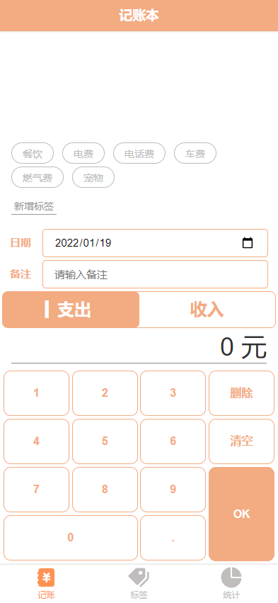

教育经历
09/2016~07/2020
广西科技大学
软件工程专业
09/2016~07/2020
澳大利亚南十字星大学
软件工程专业
项目经历
齿轮UI库
文档预览：官方文档
- 项目介绍：
齿轮 UI 是一款基于 Vue 3 和 TypeScript 的 UI 组件库,涵盖了Button, Tabs, Tab, Switch, Dialog,
BackTop等常见UI组件。
深入研究 Vue 3，使用了 setup、onMounted、watchEffect、ref、computed 等 Compositioin API 模块化的源代码简洁明了，易于阅读。每次修改代码都按照git提交规范提交。commit 历史：点击查看
我还推出了官方文档，可在线查看示例代码并复制使用，并支持 PC 和手机浏览。
已发布至npm可以通过文档安装并使用。 - 技术栈：vue3、vite、rollup、typescript、prismjs、es6、GitHub-markdown
- 项目展示:
龙门记账簿
效果预览：效果预览
- 项目介绍： 龙门记账是一个基于Vue和TypeScript并使用Vue CLI搭建的一个在线记账页面，通过本地localStorage储存数据，可以修改或增加记账标签，还支持Echarts显示账务变化。
- 技术栈：vue、vue-router、vuex、mixin、typescript、vuecli、svg-sprite-loader、dayjs
- 项目展示:

自动画太极
地址预览：效果预览
- 项目介绍： 自动画太极是我在学习JS和CSS的过程中，发现通过setInterval和style标签配合，可以动态的添加css代码。首先先写好css保存到字符中，然后向div和style标签中通过innerHTML第n个字符来实现展示和效果。考虑到用户体验还添加了速度控制按钮。
- 技术栈：JS、HTML、CSS
- 项目展示:
前端导航
地址预览：效果预览
- 项目介绍：前端导航是我在学习前端过程中，为了方便学习所设计的一个网站，初始了一些前端常用网站，并具有搜索功能，可以自定义添加站点或删除站点，支持按对应字母快速进入对应网站。
- 技术栈：jQuery、HTML、CSS
- 项目展示:
JS日历
地址预览：效果预览
- 项目介绍： 日历是我在学习js日期Date时所写的项目，通过调用Date对象方法，来还原一个真实的日历，并且实时显示为当天，同时可以显示当天有什么日程。
- 技术栈：Date、ES6、CSS
- 项目展示:
画板
地址预览：效果预览
- 项目介绍： 画板是我在学习canvas之后，通过canvas的一些方法来实现在页面上绘画，实现了画笔、橡皮、清空、保存、修改颜色、改变笔刷大小等功能，并且画布可以响应窗口变化自动调整大小。
- 技术栈：canvas、CSS、JS
- 项目展示:
开源项目
模仿jQuery实现dom操作
- 项目介绍： 我在学习jQuery的过程中，发现jquery的dom操作比原生js方便，对其如何实现产生了兴趣，在查阅资料和总结之后，模仿出jQuery的dom操作代码，将jquery放在window上，jQuery 会接受一个css选择器， 然后会获取到这个元素，但不会返回这个元素， 会返回一个对象， 对象里面有一些方法，这些方法（ 函数） 可以操作这个元素。使用闭包维持这个元素，因为有函数要访问这个元素。按用户习惯操作是通过api对象来调用函数，所以直接返回this，实现链式操作。
webpack打包文件
- 项目介绍： 我在学习webpack的过程中，学习配置webpack.config,通过file-loader、style-loader、css-loader、stylus-loader、sass-loader、dart-sass等对文件进行打包，并实现懒加载。